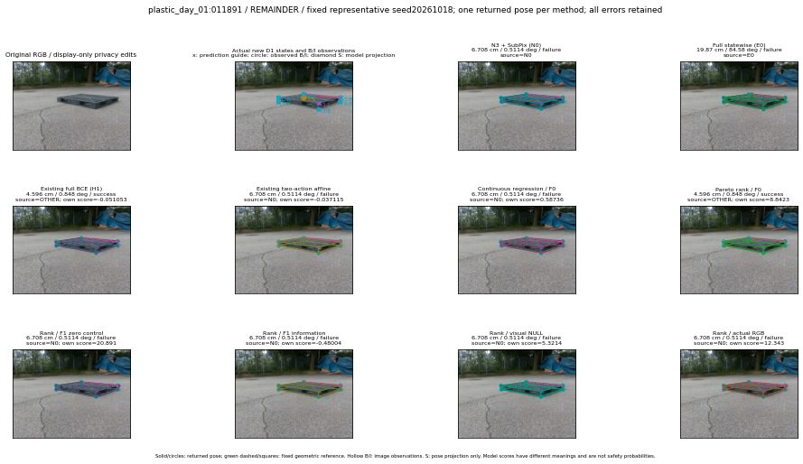

실선은 반환 자세, 초록 점선은 고정 기하 참조입니다. S는 영상 관측이 아닙니다. 점수는 모델별 의미가 다르며 보정된 안전 확률이 아닙니다. 개인정보 처리는 표시 사본에만 적용했습니다.
| 방법·seed | 위치 / 회전 / 공동성공 | 실제 출처 | 선택 후보 | 각 모델 자체 점수 |
|---|---|---|---|---|
| N0 | 6.708 cm / 0.5114 deg / failure | N0 | N/A | N/A |
| E0 | 19.87 cm / 84.58 deg / failure | E0 | N/A | N/A |
| E0_REGENERATED | 19.87 cm / 84.58 deg / failure | E0 | E0_REGENERATED | N/A |
| POSEFIX_SUBPIX_PF_ANCHOR | 3.901 cm / 0.3502 deg / success | OTHER | N/A | N/A |
| POSEFIX_SUBPIX_YOLO_ANCHOR | 3.901 cm / 0.3502 deg / success | OTHER | N/A | N/A |
| D1_H1_MLP_s20261018 | 4.596 cm / 0.848 deg / success | OTHER | G13/ORIGINAL_WD/selected | -0.051052749156951904 |
| D1_H1_MLP_s20261019 | 4.596 cm / 0.848 deg / success | OTHER | G13/ORIGINAL_WD/selected | -0.1654425710439682 |
| D1_H1_MLP_s20261020 | 4.596 cm / 0.848 deg / success | OTHER | G13/ORIGINAL_WD/selected | -0.7518543004989624 |
| D1_H1_PAIR_MLP_s20261018 | 6.708 cm / 0.5114 deg / failure | N0 | N0 | -0.846411406993866 |
| D1_H1_PAIR_MLP_s20261019 | 6.708 cm / 0.5114 deg / failure | N0 | N0 | -0.9319940805435181 |
| D1_H1_PAIR_MLP_s20261020 | 6.708 cm / 0.5114 deg / failure | N0 | N0 | -0.9603228569030762 |
| D1_H1_PAIR_ROLE_AFFINE_s20261018 | 6.708 cm / 0.5114 deg / failure | N0 | N0 | -0.03711468353867531 |
| D1_H1_PAIR_ROLE_AFFINE_s20261019 | 6.708 cm / 0.5114 deg / failure | N0 | N0 | -0.49677905440330505 |
| D1_H1_PAIR_ROLE_AFFINE_s20261020 | 6.708 cm / 0.5114 deg / failure | N0 | N0 | -0.04634907469153404 |
| R_CONT_F0_s20261018 | 6.708 cm / 0.5114 deg / failure | N0 | N0 | 0.5873632431030273 |
| R_CONT_F0_s20261019 | 6.708 cm / 0.5114 deg / failure | N0 | N0 | 0.6682322025299072 |
| R_CONT_F0_s20261020 | 4.596 cm / 0.848 deg / success | OTHER | G13/ORIGINAL_WD/selected | 0.7829797267913818 |
| R_ORDER_F0_s20261018 | 4.596 cm / 0.848 deg / success | OTHER | G13/ORIGINAL_WD/selected | 8.842275619506836 |
| R_ORDER_F0_s20261019 | 6.708 cm / 0.5114 deg / failure | N0 | N0 | 10.912044525146484 |
| R_ORDER_F0_s20261020 | 6.708 cm / 0.5114 deg / failure | N0 | N0 | 5.04377555847168 |
| R_ORDER_F1_ZERO_s20261018 | 6.708 cm / 0.5114 deg / failure | N0 | N0 | 20.891159057617188 |
| R_ORDER_F1_ZERO_s20261019 | 4.596 cm / 0.848 deg / success | OTHER | G13/ORIGINAL_WD/selected | 27.208847045898438 |
| R_ORDER_F1_ZERO_s20261020 | 6.708 cm / 0.5114 deg / failure | N0 | N0 | 12.757823944091797 |
| R_ORDER_F1_s20261018 | 6.708 cm / 0.5114 deg / failure | N0 | N0 | -0.4800443649291992 |
| R_ORDER_F1_s20261019 | 6.708 cm / 0.5114 deg / failure | N0 | N0 | 9.764891624450684 |
| R_ORDER_F1_s20261020 | 6.708 cm / 0.5114 deg / failure | N0 | N0 | 1.6612417697906494 |
| V_ORDER_NULL_s20261018 | 6.708 cm / 0.5114 deg / failure | N0 | N0 | 5.321377754211426 |
| V_ORDER_NULL_s20261019 | 6.708 cm / 0.5114 deg / failure | N0 | N0 | 4.6277546882629395 |
| V_ORDER_NULL_s20261020 | 6.708 cm / 0.5114 deg / failure | N0 | N0 | 5.396870136260986 |
| V_ORDER_RGB_s20261018 | 6.708 cm / 0.5114 deg / failure | N0 | N0 | 12.342809677124023 |
| V_ORDER_RGB_s20261019 | 6.708 cm / 0.5114 deg / failure | N0 | N0 | 4.5688581466674805 |
| V_ORDER_RGB_s20261020 | 6.708 cm / 0.5114 deg / failure | N0 | N0 | -6.64837121963501 |